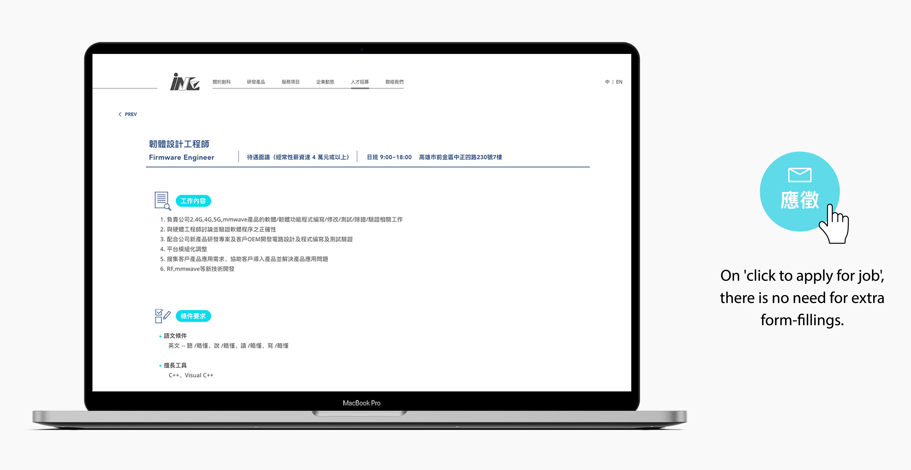

Project Brief
I created a series of brand images for the startup company, and the official website is the main material to promote the company's philosophy and image. The main goal of this project is to convey professional, high tech services, and can easily be navigated by potential clients and job seekers by enhancing brand image and clear communication of services.
Challenges
- Build Brand Image
- Provide Information of INC
- Communicate Company Culture
- Provide Contact Information
Competitive Analysis
I choose three companies which are all focus on high-tech development
to compare the user experience of each competitor's website.
- Most of technology companies are tend to use blue as the main represent color.
- Navigation is better when it's sufficient and clear.
- The homepage plays an important part when making first impressions for users.
- Appropriate interactions on browsing websites can attract users' eyes.
- Provide more methods for users to get information about the company.
Information Architecture
Put the links of important and newest information at the home page.
Design Features
Feature 1
High Tech, Future Sense, Simplicity
Establish the unique style of INC. At the home page, I used parallax, color gradient with fade in animations to provide users to experience the infomation interaction and convey novel impression.
Feature 2
Provide Clear Information
I want users to be able to navigate in the most efficient manner. I put the main services and newest information at the homepage. And provide buttons with an anchor feature that allows users to quickly direct themselves to the specific areas of the website.
Feature 3
Vibrant Interaction
As INC is filled with young employees, I have given micro-interactions to indicate youthfulness.
Feature 4
Let's Get In Touch
Provided various ways that users can contact us directly. This includes online messaging feature and social media links.
Feature 5
We Want You!
On the job description page, a stakeholder had requested to add the link to another job seeker website initially. I had suggested to put a button which lets job seekers to send emails directly to our company's mailbox.

Final Outcome